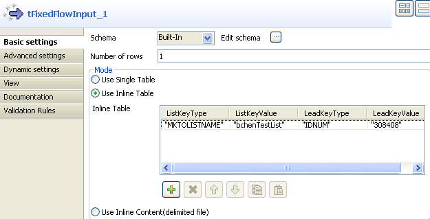
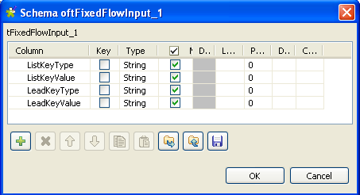
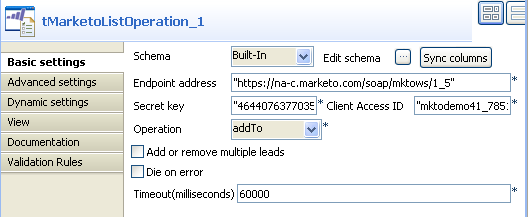
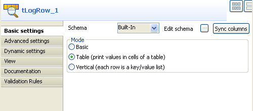
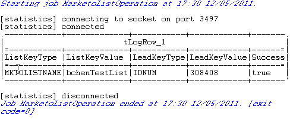

|
Component family |
Business/Cloud | ||||
|
Function |
The tMarketoListOperation component adds/removes one or more leads to/from a list in the Marketo DB; It also verifies if one or more leads exist in a list in Marketo DB. | ||||
|
Purpose |
The tMarketoListOperation component allows you to add/remove one or more leads to/from a list in the Marketo DB on a Web server. Also, you can verify the existence of one or more leads in a list in the Marketo DB. | ||||
|
Basic settings |
Schema and Edit Schema |
A schema is a row description, i.e., it defines the number of fields that will be processed and passed on to the next component. The schema is either built-in or remote in the Repository. Click Edit Schema to make changes to the schema. Note that if you make changes, the schema automatically becomes built-in. Click Sync columns to retrieve the schema from the previous component connected in the Job. | |||
|
|
|
Built-in: No property data is stored centrally. | |||
|
|
|
Repository: Select the Repository file where Properties are stored. | |||
|
|
Endpoint address |
The URL of the Marketo Web server for the SOAP API calls to. | |||
|
|
Secret key |
Encrypted authentication code assigned by Marketo.
| |||
|
|
Client Access ID |
A user ID for the access to Marketo web service.
| |||
|
|
Operation |
Options in this list allow you carry out the adding/deletion one or more leads to/from a list in the Marketo DB; Also you can verify the existence of single or multiple leads in a list in the Marketo DB. addTo: This operation adds one or more leads to a list in the Marketo DB. isMemberOf: This operation checks the Marketo DB to judge whether the specific leads exist in the list. removeFrom: This operation removes one or more leads from a list in the Marketo DB. | |||
|
|
Add or remove multiple leads |
Select this check box to add multiple leads to or remove multiple leads from a list in the Marketo DB.
| |||
|
|
Timeout (milliseconds) |
Type in the query timeout (in milliseconds) on the Marketo Web service.
| |||
|
|
Die on error |
This check box is selected by default. Clear the check box to skip the row on error and complete the process for error-free rows. If needed, you can retrieve the rows on error via a Row > Reject connection. | |||
|
Advanced settings |
tStatCatcher Statistics |
Select this check box to gather the Job processing metadata at a Job level as well as at each component level. | |||
|
Usage |
This component is used as an intermediate component, it requires an input component and an output component. | ||||
|
Limitation |
n/a | ||||
![[Note]](../images/note.png)
The following scenario describes a three-component Job that adds a lead record into a list in the Marketo database.
Drop tMarketoListOperation, tFixedFlowInput and tLogRow onto the design workspace.
Connect tFixedFlowInput to tMarketoListOperation using a Row > Main connection.
Connect tMarketoListOperation to tLogRow using a Row > Main connection.
Double-click tFixedFlowInput to define the component properties in its Basic settings view.
Click the three-dot button next to Edit schema to set the schema manually.
Click the plus button to add four columns: ListKeyType, ListKeyValue, LeadKeyType and LeadKeyValue. Keep the settings as default. Then click OK to save the settings.
In the Mode area, select Use Inline Table.
Click the plus button to add a new line and fill the line with respective values. In this example, these values are: MKTOLISTNAME for ListKeyType, bchenTestList for ListKeyValue, IDNUM for LeadKeyType and 308408 for LeadKeyValue.
Double-click tMarketoListOperation to define the component properties in its Basic settings view.
Click the Sync columns button to retrieve the schema defined in tFixedFlowInput.
Type in 1 in the Number of rows field.
Fill the Endpoint address field with the URL of the Marketo Web server. In this example, it is https://na-c.marketo.com/soap/mktows/1_5.
Note that the URL used in this scenario is for demonstration purpose only.
Fill the Secret key field with encrypted authentication code assigned by Marketo. In this example, it is 464407637703554044DD11AA2211998.
Fill the Client Access ID field with the user ID. In this example, it is mktodemo41_785133934D1A219.
From the Operation list, select addTo.
Type in the limit of query timeout in the Timeout field. In this example, use the default number: 60000.
Double-click tLogRow to define the component properties in its Basic settings view.
Click the Sync columns button to retrieve the schema defined in tMarketoListOperation.
In the Mode area, select Table.
Save your Job and press F6 to execute it.

The result of adding a lead record to a list in Marketo DB is displayed on the Run console.